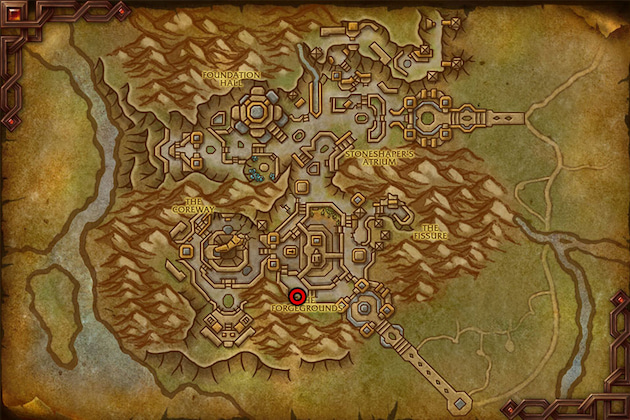
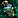
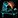

This War Within Alchemy leveling guide will show you the quickest and most cost-effective way to level your Khaz Algar Alchemy skill from 1 to 100.
This War Within Alchemy leveling guide will show you the quickest and most cost-effective way to level your Khaz Algar Alchemy skill from 1 to 100.
Alchemy pairs best with Herbalism. By leveling these two professions together, you can save a lot of gold by farming all the necessary herbs yourself. If you want to level Herbalism, check out my War Within Herbalism leveling guide.If you don't have Herbalism, ensure you have enough gold to buy the herbs you will need, as they are required in large quantities.
Alchemy Trainer and Crafting Table Location
You can learn the War Within Alchemy skill from the Alchemy trainer in Dornogal.
Most War Within Alchemy recipes require a nearby crafting station. You can find the Alchemist's Lab Bench near the Alchemy trainer in Dornogal.

Shopping List
This is the list of materials needed to get to around 30. There are just too many variables for the 30-100 part. The quality doesn't matter for leveling. Buy the cheapest.
- 86x
 Mycobloom
Mycobloom - 25x
 Blessing Blossom
Blessing Blossom - 20x
 Orbinid or 20x
Orbinid or 20x  Luredrop
Luredrop - 11x
 Arathor's Spear
Arathor's Spear
Leveling Khaz Algar Alchemy
Goblin characters have +5 Alchemy skill because of their passive  Better Living Through Chemistry, and Kul Tiran characters have +2 from the trait
Better Living Through Chemistry, and Kul Tiran characters have +2 from the trait  Jack of All Trades.
Jack of All Trades.
Any extra Alchemy skill means recipes stay orange for more points. You can some save gold by doing lower-level recipes for more points.
1 to 30
Completing these steps below will get you to around 30, and you will discover a few new Alchemy recipes.
The Gilded Vial is sold by the Alchemy supply vendor near your trainer. If you need higher quality ones, you have to buy those from the Auction House.
1. Getting Coreway Catalyst
Craft 10x Algari Healing Potion - 60x Mycobloom, 50x Gilded Vial
Use Neutralize Concoctions on the Algari Healing Potion you just made to get some Coreway Catalyst for experimenting.
If you need more Coreway Catalyst, just craft more Healing Potions or buy them from the Auction House if they are cheaper there. You can also check Cavedweller's Delight, it might be even cheaper to buy than the Healing Potions. (it's not worth to craft)
2. Discovering the basic potions
Using Wild Experimentation on the herbs listed below for the first time will teach you the basic Alchemy potion recipes. I recommend doing this first so you can earn your First Craft bonuses from crafting the basic potions.
- Use Wild Experimentation on 20x Mycobloom.
- Use Wild Experimentation on 20x Blessing Blossom.
- Use Wild Experimentation on 20x Orbinid or 20x Luredrop.
You will discover these potions: Algari Mana Potion, Slumbering Soul Serum, Cavedweller's Delight
3. First Craft Bonuses
Craft these two while they still give skill point.
1x 
1x Petal Powder - 2x Mycobloom, 6x Arathor's Spear
Alchemy Specializations in War Within
When you hit 25, you will unlock Specializations. Which specialization you choose to unlock first is not that important, you can unlock all 4 as you level up your professions.
However, how you spend your Alchemy knowledge points do matter. Don't be too hasty with spending points just now unless you have a clear goal of which direction you want to go. The Knowledge points will be the limited commodity you will never get enough of, and you will always want more of. You can continue leveling Alchemy and return to spending knowledge points a bit later.
I recommend reading my War Within Alchemy Specialization Guide and follow one of the sample build if you can't decide on a clear path.
Alchemy Specialization Guide and Builds
Discovery and Experimentation
Use Wild Experimentation until your experimentation results in a hazardous outcome. You will lose HP and thrown back. It's based on random chance when this will happen, but probably within 1-6 casts.
The first time you get a hazardous outcome, you will learn the Meticulous Experimentation recipe.
Discovering More Recipes
Make Wild Experimentation until you get a hazardous outcome again. The chance to discover recipes is low and the chance that your experiment will result hazardous outcome actually pretty high, so this can happen pretty early, like on your first craft.
There is a chance you won't discover anything new.
This time you will get the Recent Catastrophe debuff that will prevent you from doing more experimentation for 15 minutes.
The only way to clear the debuff if you drink a  Formulated Courage. You can learn this recipe by putting 30 points into the Alchemical Mastery specialization.
Formulated Courage. You can learn this recipe by putting 30 points into the Alchemical Mastery specialization.
30 - 60
The cheapest method is to use Meticulous Experimentation. It's cheap to craft, gives 5 skill points and you have higher chance to discover new recipes than with Wild Experimentation, but it has 1 day Cooldown
Meticulous Experimentation is something you would want to craft daily anyway, since this is the best way to discover new potions.
So, if you are not rushing to 100, I'd recommend crafting 5x Meticulous Experimentation until it stops giving multiple skill points at 60.
Alternatives
These are the alternative methods you can use to level if you don't want to wait 5 days.
Crafting Discovered Potions, Flasks and Phials
If you were fortunate enough to discover some of the more useful Flasks, Phials, or Potions, you can level with those. Initially, I recommend crafting a few of each to test how easy it is to sell them at the Auction House.
If you see they are selling well, make the one that gives you the most profit, or the one where you lose the least gold. It's possible some of the potions will sell below materials cost, so you might not end up making profit.
Thaumaturgy up to 50
Thaumaturgy specialization unlocks the Thaumaturgy ability that can turn 20 materials of your choosing into 10-12 different materials and 1-2 Transmutagen.
For example, using Thaumaturgy on 20x  Mycobloom could result in 5x
Mycobloom could result in 5x  Storm Dust 6x
Storm Dust 6x  Bismuth, and 1-2x Ominous Transmutagen.
Bismuth, and 1-2x Ominous Transmutagen.
Thaumaturgy only give skill points up to 50, so you will still have to use experimentation or craft potions/Flasks.
60 - 100
Crafting Flasks or Potions is the best way to level Alchemy up to 100. If you still haven't discovered any of the Flask recipes, check out the alternative recipes section below.
Meticulous Experimentation will stay yellow all the way up to 100, so make sure to at least craft this daily until you get a Flask recipe.
Flasks
Flasks give guaranteed 2 skill point per craft until 90 when they turn yellow. Then they will stay yellow until 100.
Flask of Saving Graces only give 1 skill point, so you have to craft more from that one.| Flask | Reagents |
|---|---|
| 45x Flask of Tempered Mastery | 45x |
| 45x Flask of Tempered Versatility | 45x |
| 45x Flask of Tempered Swiftness | 45x |
| 45x Flask of Tempered Aggression | 45x |
| 45x Flask of Alchemical Chaos | 45x |
| 60x Flask of Saving Graces | 60x |
Potions
Potions give guaranteed skill point until 80 when they turn yellow. They turn green at 90, but they give skill points up to 100.
| Potion | Reagents |
|---|---|
| Frontline Potion | 70x |
| Grotesque Vial | 70x |
| Tempered Potion | 70x |
| Potion of Unwavering Focus | 70x |
| Potion of the Reborn Cheetah | 70x |
Alternative recipes
Outside of Flasks and Potions, only transmutations give skill points up to 100, but there are other Phials and Flask that you can use until 80.
Thaumaturgy specialization
Every transmutation that you can learn in the Thaumaturgy specialization will give you skill points up to 100. Most of them turn yellow at 80, and green at 90. Unfortunately, transmutes have 1 day cooldown once you used up all your charges.
Gleaming Glory is the only one that doesn't have a cooldown, and it also gives guaranteed skill ups to 100. But, you will have to spend a lot of points into the Thaumaturgy specialization to get enough 
Profession Phials up to 80
 Phial of Truesight, Phial of Bountiful Seasons, Phial of Concentrated Ingenuity, Phial of Enhanced Ambidexterity give skill points up to 80, but the recipes are green between 70-80, so you have to make a bunch of them.
Phial of Truesight, Phial of Bountiful Seasons, Phial of Concentrated Ingenuity, Phial of Enhanced Ambidexterity give skill points up to 80, but the recipes are green between 70-80, so you have to make a bunch of them.
PvP Flasks up to 80
Vicious Flask of Classical Spirits, Vicious Flask of Honor and Vicious Flask of Manifested Fury give skill points up to 80. They will be green for the last 10 points.
The recipes are sold by Hotharn in Dornogal for 7500 Honor Each, but they are not BoP, so you can also buy them from the Auction House.
Recipe list: